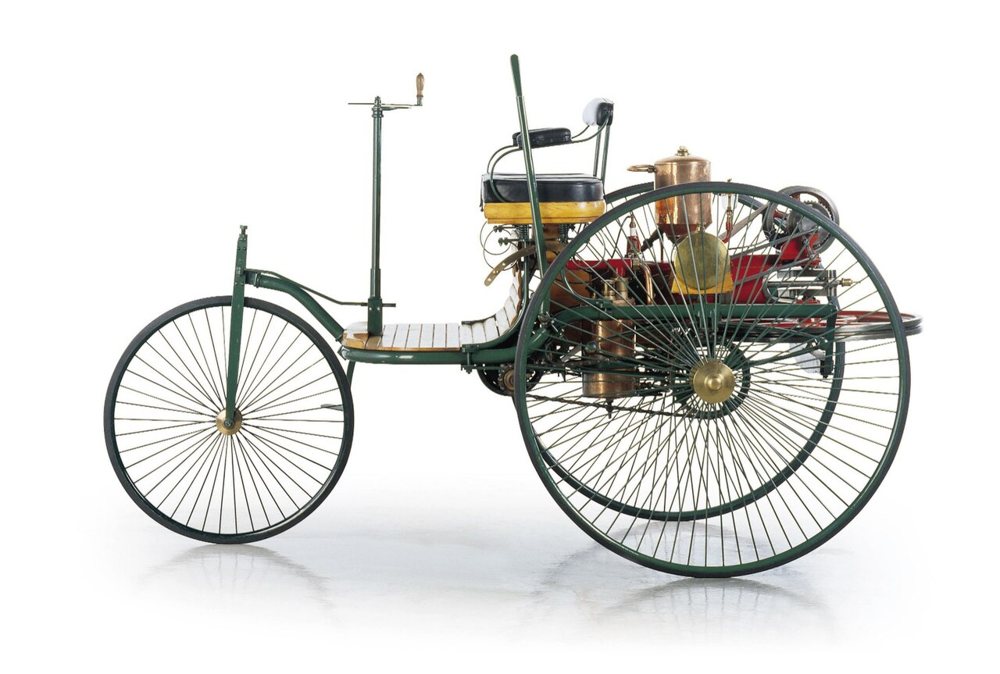

Хронология развития
История машин берет свое начало с конца XVIII века. Различные изобретатели, как Карл Бенц и Готлиб Даймлер работали над прототипами безлошадных карет. Ниже приведена таблица с важными вехами.
| Год | Событие |
|---|---|
| 1886 | Первый автомобиль Бенца |
| 1908 | Модель T от Форда |
| 1950 | Внедрение электроники |
Переход к новым технологиям никогда не останавливается.
Ранние автопроизводители
- Mercedes-Benz
- Ford
- Peugeot